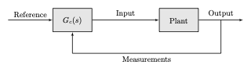
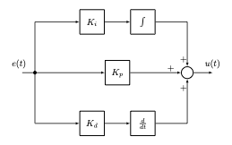
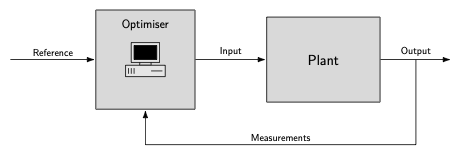
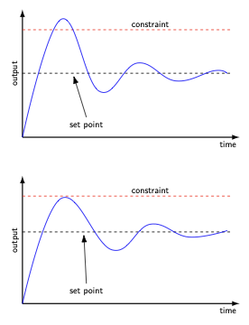
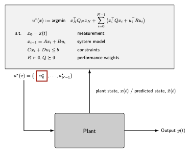
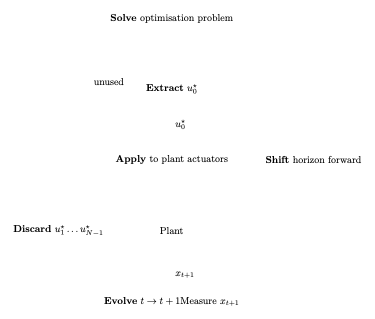
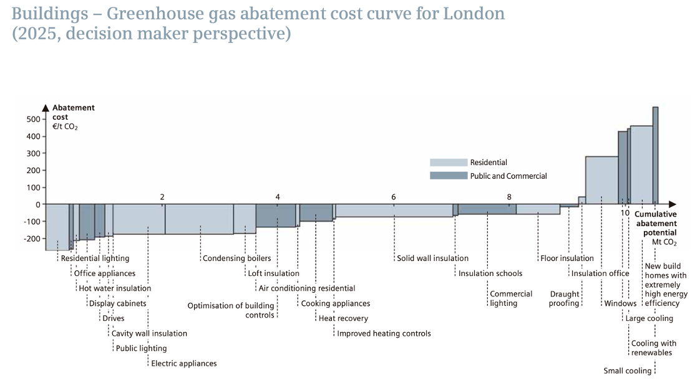
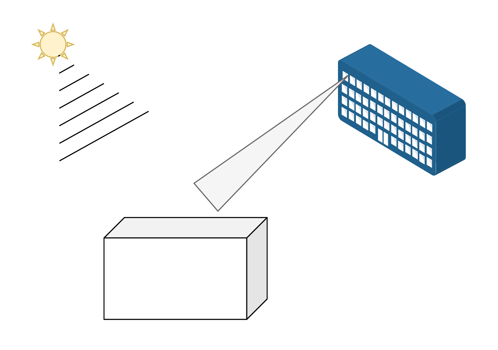
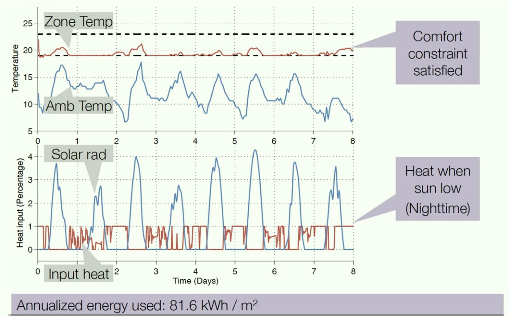
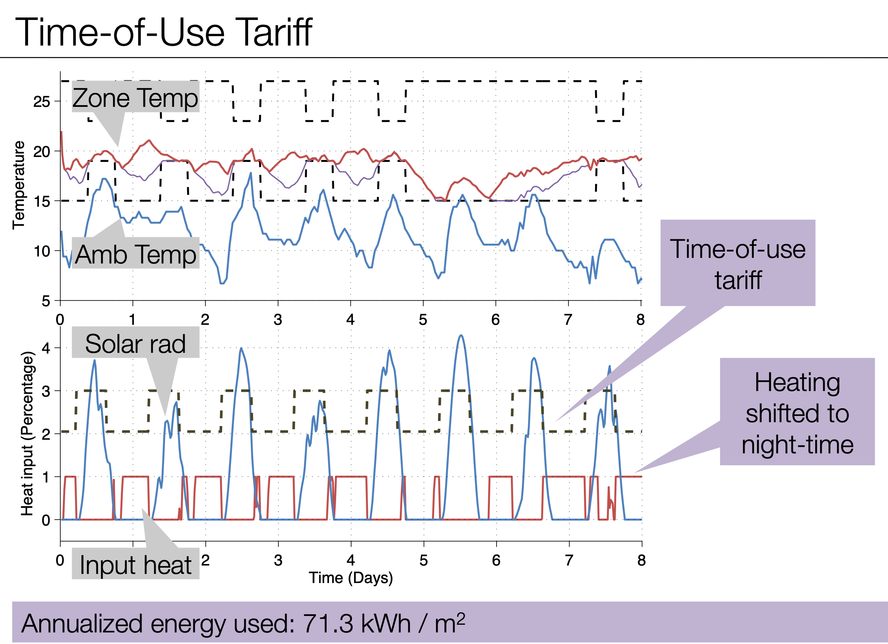

For over fifty years, control engineering relied on a simple rule: measure the error, then correct it. Classical feedback controllers such as PID react to what has already happened. Model Predictive Control (MPC) takes a fundamentally different approach: it uses a mathematical model of the system to predict future behaviour and computes control actions by solving a constrained optimisation problem at each time step.
MPC originated in the process industries but is now applied across robotics, autonomous vehicles, aerospace, renewable energy, building climate control, biomedical systems, and finance. The common thread in these applications is that the system has multiple interacting variables, hard physical constraints, and benefits from anticipating future conditions rather than merely reacting to past errors.
Model Predictive Control (MPC) must first be placed within the framework of classical control theory in order to be understood. The goal of a typical control loop, illustrated in Figure 1.1, is to adjust a system (or plant) so that its outputs follow a desired reference.
In the classical approach, a controller is designed, usually represented as a transfer function \(G_c(s)\) in the Laplace domain. On its own, this controller is a dynamic system. In order to produce an input for the plant, it processes measurements and reference signals. The goal of the design process is to create a dynamic system (the controller) with characteristics like stability, quick rise time, and little overshoot in the closed-loop transfer function.

To give an example, in classical control (e.g., Proportional-Integral-Derivative or PID), the engineer explicitly defines how the controller calculates the input. The internal structure of a PID controller is shown in Figure 1.2. A PID controller is explicitly instructed to:
Calculate the error, \(e(t)=r(t)-y(t)\) (Reference - Output).
Integrate the error, \(\int e(t)dt\).
Differentiate the error, \(\dfrac{d}{dt}e(t)\).
Multiply these terms by specific gains (\(K_p, K_i, K_d\)) and sum them to obtain control signal, \[u(t)=K_pe(t)+K_i \int e(t)dt+K_d\frac{d}{dt}e(t)\]
This sum constitutes the control input that is applied to the plant. The behaviour is fixed by the mathematical structure of the controller. That means when one knows \(e(t)\) numerically and once the control gains (\(K_p, K_i, K_d\)) are selected, the control signal applied to the plant can be precisely calculated in closed form.

As shown in Figure 1.3, MPC represents a fundamental shift in this philosophy. In an MPC architecture, the explicit controller block is replaced by an optimisation routine. Here we call it Optimiser. This is mostly an embedded digital computer that runs an algorithm.
Instead of specifying how to calculate the input mathematically, MPC specifies what the controller should achieve. That means, there is no controller structure specified but the optimiser directly generates the control signal. If the error signal, \(e(t)\) is known, we do not know what the controller will generate. The signal generated by the optimiser that goes into the Plant depends on many factors and conditions of the controller, measured signal, dynamics of the plant, reference signal, environmental conditions, and their current, past and predicted values.
Generally, the engineer provides the optimiser with four key components:
A Model (Plant dynamics): Information on how the plant reacts to inputs and disturbances (typically a state-space model derived from first principles like Newton’s second law of motion, Kirchoff’s voltage and current laws for electrical circuits).
Measurements: The current state \(x(t)\) of the system and historical data. This could be either a measured signal or estimated one.
Objectives: A mathematical function cost representing the goal (e.g., tracking a reference or minimising energy consumption).
Constraints: Limitations on the system (e.g., maximum valve opening, safety limits, temperature limits, rate bounds of the actuator etc.).

The optimiser processes this information to select the input that brings the plant to ideal form by minimising an objective (cost) while strictly respecting constraints.
To intuitively grasp the mechanics of MPC, consider the challenge of driving a racing car around a circuit in the minimum possible time. To design an effective controller for this vehicle, one must first formalise the environment and the vehicle’s behaviour:
The Model (Dynamics): The controller must understand how the car responds to inputs—how steering, acceleration, and braking translate into changes in position and velocity.
The Measurements (Feedback): To plan the optimal trajectory, the controller must know the car’s current state at every instant. This includes the position (\(x, y\)) relative to the track boundaries, the velocity (\(v\)) to judge braking distances, and the heading angle (\(\theta\)) to align with the apex of the next corner.
The Objective (Cost Function): The primary goal is to minimise the lap time, often whilst secondary goals, such as minimising fuel consumption or tyre wear, are also considered.
The Constraints: The car must remain within the track boundaries, stay below the engine’s maximum power output, and respect the physical limits of tyre traction to avoid skidding.
Consider racing track shown in Figure 1.4. A human driver naturally performs predictive control. Upon approaching a corner, the driver does not simply react to the car’s current position. Instead, they look ahead—establishing a prediction horizon. They anticipate the car’s future trajectory based on its current momentum and adjust their inputs proactively. For example, a driver will pull to the outside of the track to flatten the turn radius, anticipating the geometry of the road ahead before they even reach the apex.
Imagine if the driver planned the entire lap at the starting line based on a map, closed their eyes, and executed that plan blindly. This "open-loop" execution would inevitably result in a crash. This failure occurs because the internal model is never perfect. There are several reasons for this failure:
Model Mismatch: Tyre friction changes as the rubber heats up, or oil on the track alters the grip levels.
Disturbances: External factors, such as sudden wind gusts, push the car off its intended path.
Unforeseen Constraints: A driver might round a blind corner to discover a stationary, crashed car blocking the road.
The original plan calculated at the start line cannot account for these variables. To survive, the driver must use constant visual feedback to discard the old plan and calculate a new trajectory that avoids the obstacle. In MPC, this is known as a receding horizon strategy. The controller calculates an optimal sequence of actions for the entire horizon but only executes the immediate first step. A fraction of a second later, it takes a new measurement and repeats the entire optimisation. This constant re-planning makes the system robust to uncertainty and ensures the car remains on the track, even in a changing or unpredictable environment.
The mathematical framework that brings the racing car analogy to life is known as Receding Horizon Control (RHC). This strategy serves as the engine of MPC, bridging the gap between static optimisation and dynamic control.
The RHC strategy operates in discrete time steps. At each sampling instant \(t\), the controller performs the following sequence, as illustrated in Figure 1.5:
Measure: Obtain the current state of the system, denoted as \(x(t)\) via sensors or estimators. This provides the starting line for the current iteration.
Plan (Optimise): Using an internal model of the plant, calculate an optimal sequence of future control inputs \(\{u_0, u_1, \dots, u_{N-1}\}\) over a finite prediction horizon \(N\). This sequence is chosen to minimise a cost function (such as error from a reference) whilst respecting all physical constraints.
Execute: Although a full sequence of \(N\) steps was calculated, the controller applies only the first element, \(u_0\), to the plant. The remaining \(N-1\) steps of the plan are discarded.
Evolve: The system evolves for one sample period under the influence of the applied input and any external disturbances.
Repeat: At the next time step \(t+1\), the entire process begins again. The horizon "recedes" (shifts forward by one step), and a new optimisation problem is solved from the new state \(x(t+1)\).
The reader may naturally ask: "If the plan calculated at step \(t\) was optimal, why discard the rest of it and repeat the work at step \(t+1\)?"
The answer lies in the inevitable gap between the controller’s internal model and the real world. If we were to execute the entire \(N\)-step sequence without looking back, we would be operating in open-loop. Any small modelling error that falls into that \(N\) instants or unexpected gust of wind would cause the system to drift away from the intended path.
By only executing the first step and then re-measuring the state, we turn a series of open-loop predictions into a closed-loop feedback strategy. The horizon refers to how far into the future the controller predicts. Since we repeat the optimisation at every step, the horizon moves forward with time. This repetitive re-planning ensures that the control action is always based on the most current information. The receding nature of the horizon ensures that the controller is constantly correcting for errors and reacting to new information, much like the driver who constantly adjusts their steering as the road unfolds.
Whilst traditional control methods—like Proportional-Integral-Derivative (PID) control, lead-lag compensation, and the Linear Quadratic Regulator (LQR)—are still workhorses of industrial automation, they often hit their limits when dealing with today’s demanding performance requirements. Model Predictive Control has become a leading approach for complex systems by anticipating future behaviour through model-based prediction.
The transition from classical methods to MPC is typically driven by the need to operate closer to the physical limits of a system without compromising safety or stability. Unlike traditional controllers, which are often tuned via trial-and-error to achieve a specific response, MPC provides a systematic framework that accounts for the system’s model and its environment. The primary advantages that distinguish MPC from its predecessors are outlined in the following subsections.
This is the most significant advantage of MPC. In the real world, every engineering system is subject to physical and operational limits. These may include actuator constraints, such as the maximum opening of a valve or the voltage limit of a motor, and state constraints, such as maintaining a chemical reactor below a critical temperature or ensuring a vehicle remains within track boundaries.
Classical Control: Ignores constraints during design and is inherently blind to these boundaries. A PID controller, for instance, may calculate a control action that the hardware cannot physically execute. This often leads to integrator windup, where the controller’s internal logic becomes saturated, resulting in large overshoots or sluggish recovery.
MPC: Includes constraints directly in the optimisation. The optimiser knows the limits and will find the best control action that resides on the boundary of those limits without crossing them. MPC behaves non-linearly: it acts gently when far from a constraint but aggressively when approaching a limit to prevent violation. (See Figure 1.6). MPC treats constraints as fundamental components of the control problem. By predicting future behaviour, the optimiser can anticipate a potential constraint violation and adjust the control signal proactively before the limit is reached. This ability to operate safely at the very edge of the feasible operating space is perhaps the most significant economic driver for MPC in industry.

A major drawback of many traditional controllers is that they’re inherently causal—they can only react to what’s already happened or what’s happening right now. However, in many modern engineering applications, we often have access to "future knowledge"—information about upcoming changes in what we want the system to do, or predicted external disturbances. MPC can exploit this information directly through its prediction mechanism, via its look-ahead or preview capability.
To show the advantage of acting on future information, consider the following examples:
Smart Energy Management: Think about a building’s HVAC (Heating, Ventilation, and Air Conditioning) system. If the weather forecast predicts a scorching heatwave for the afternoon—right when electricity prices hit their peak—an MPC controller can choose to "pre-cool" the building’s thermal mass during the cooler morning hours whilst energy is cheaper. A traditional PID controller, being reactive, would only ramp up the cooling once the internal temperature had already started to climb, consuming electricity during the most expensive tariff period.
Autonomous Path Following: In autonomous driving, the vehicle often has map data or sensor information about the road layout ahead. If there’s a sharp bend coming up, a reactive controller (like a lane-keeping PID) would only start to steer or slow down once it detects a tracking error at the corner. In contrast, MPC sees the curve in its prediction horizon and begins adjusting the steering angle and reducing speed before entering the turn. This produces a smoother, safer, and more "human-like" driving experience.
Renewable Energy Integration: In a microgrid, if the forecast shows a sudden drop in solar irradiance coming (say, due to approaching cloud cover), MPC can proactively fire up a backup power source or dial back non-essential loads. This keeps the grid stable by making up for the power shortfall before the frequency actually drops.
Incorporating forecast information into the optimisation converts a reactive control strategy into a proactive one.
Whilst classical control theory typically tackles problems by designing individual loops for individual variables (Single-Input Single-Output, or SISO), modern systems are rarely this straightforward. MPC handles Multi-Input Multi-Output (MIMO) systems natively through its state-space formulation, and its flexibility in defining what "optimal" performance actually means.
In many real-world systems, the inputs and outputs are "coupled". This means that tweaking one input to control a particular output will inevitably affect other outputs as well. MPC handles this problem very well.
The Shower Analogy. Consider the everyday challenge of adjusting a shower. You’ve got two goals: keeping the water at a specific temperature and achieving your desired flow pressure. You also have two controls at your disposal: the hot tap and the cold tap.
The PID Approach (Decentralised): A traditional strategy might assign one controller to temperature (operating the hot tap) and another to pressure (operating the cold tap). If you want more pressure, the pressure controller opens the cold tap. This increases the flow, but immediately throws off the temperature, causing the water to go freezing cold. The temperature controller then scrambles to fix this, which in turn messes with the pressure. The two loops end up fighting each other, leading to an oscillation and a rather uncomfortable shower.
The MPC Approach (Centralised): MPC uses a multivariable model that understands how everything interacts. It knows that to increase pressure without disturbing the temperature, it needs to open both the hot and cold taps at the same time in just the right ratio. Because it works out all the inputs together, it accounts for cross-coupling automatically—no need for complicated decoupling networks.
Classical controllers such as PID typically have a very narrow notion of what constitutes success: the control objective is simply to drive the tracking error to zero. While this makes PID controllers effective and easy to deploy, it also means that they have no inherent understanding of cost or trade-offs. Model Predictive Control (MPC), by contrast, is built around an explicit cost function, denoted by \(J\), which allows the engineer to state mathematically what aspects of performance are important for a given application.
By tuning the relative weights of the different terms in the cost function, the behaviour of an MPC controller can be shaped to handle more complex and realistic scenarios, where competing objectives must be balanced rather than optimised in isolation.
Consider, for example, a high-precision servo system. A PID controller may react very aggressively in its attempt to eliminate even tiny tracking errors, leading to rapid actuator motion and unwanted vibrations. An MPC controller can be designed to include a penalty on the rate of change of the control input, \(\Delta u\). This effectively tells the controller to prioritise accurate tracking, but only insofar as it does not require excessive or abrupt actuation. The resulting control signal is smoother, reducing mechanical wear and helping to extend the lifespan of the hardware.
A similar principle applies in process control applications such as chemical plants. There may be several different ways to achieve the desired product quality. One strategy might rely more heavily on steam, which is effective but expensive, while another might use additional catalyst, which is cheaper but leads to slower dynamics. Within an MPC framework, such preferences can be encoded directly by assigning different economic weights to each input. The optimiser then determines the specific combination of control actions that satisfies the quality constraints while minimising the overall financial cost.
The Model Predictive Control problem is fundamentally defined as a finite-horizon optimisation problem that is solved repeatedly at each time step. To understand how MPC operates, one must examine its three core mathematical components: Modelling the cost function, imposing constraints, and applying the receding horizon principle.
Predicting the future evolution of a system requires an explicit mathematical description of its dynamics. As digital controllers operate at discrete sampling instants, this description is typically expressed in discrete time. For a linear, time-invariant system, the prediction model is written in State–Space form as \[\begin{equation} x_{k+1} = A x_k + B u_k . \end{equation}\] Here, \(x_k \in \mathbb{R}^n\) denotes the state vector, which encapsulates the variables describing the system’s current condition (such as position, velocity, or temperature), while \(u_k \in \mathbb{R}^m\) denotes the control input applied at time step \(k\). The matrices \(A\) and \(B\) characterise the system dynamics and determine how the state evolves from time step \(k\) to \(k+1\) under the applied input.
With a model capable of predicting future behaviour, the next step is to define what constitutes desirable performance. In MPC, this is achieved through the definition of a scalar cost function, \(J\), which evaluates the quality of a predicted state and input trajectory over a finite prediction horizon of length \(N\). A widely adopted choice is the quadratic cost function \[\begin{equation} J(x_0, {u}) = \sum_{k=0}^{N-1} \left( x_k^\top Q x_k + u_k^\top R u_k \right) + x_N^\top Q_N x_N . \end{equation}\] The quadratic structure ensures that larger deviations are penalised disproportionately more than smaller ones, reflecting a least-squares philosophy. The relative importance of competing objectives is governed by the weighting matrices:
Performance weight (\(Q\)): penalises deviations of the state from its reference. Increasing \(Q\) encourages faster error correction and leads to more aggressive closed-loop behaviour.
Input weight (\(R\)): penalises control effort. Larger values of \(R\) discourage excessive or rapid changes in the control input, resulting in more conservative actuation.
Terminal weight (\(Q_N\)): penalises the terminal state \(x_N\) at the end of the horizon and is commonly introduced to promote stability and desirable long-term behaviour.
Although the compact matrix notation \(x^\top Q x\) is mathematically convenient, it can obscure the physical interpretation of the tuning parameters. To clarify this intuition, it is instructive to examine a simple example.
Consider a mechanical system, such as a robotic manipulator or a vehicle, with two state variables and a single control input:
\(x_1\): position error relative to a desired target,
\(x_2\): velocity,
\(u\): applied force (for example, motor voltage or throttle input).
The state vector is therefore \(x_k = \begin{bmatrix} x_1 \\ x_2 \end{bmatrix}\). In practice, the state weighting matrix \(Q\) is almost always chosen to be diagonal, allowing each state component to be penalised independently: \[\begin{equation} Q = \begin{bmatrix} q_1 & 0 \\ 0 & q_2 \end{bmatrix} , \end{equation}\] where \(q_1 \ge 0\) and \(q_2 \ge 0\) are tuning parameters selected by the engineer.
Expanding the quadratic term \(x_k^\top Q x_k\) reveals its interpretation as a weighted sum of squared state variables: \[\begin{equation} \begin{aligned} x_k^\top Q x_k &= \begin{bmatrix} x_1 & x_2 \end{bmatrix} \begin{bmatrix} q_1 & 0 \\ 0 & q_2 \end{bmatrix} \begin{bmatrix} x_1 \\ x_2 \end{bmatrix} \\ &= \begin{bmatrix} x_1 & x_2 \end{bmatrix} \begin{bmatrix} q_1 x_1 \\ q_2 x_2 \end{bmatrix} \\ &= q_1 x_1^2 + q_2 x_2^2 . \end{aligned} \end{equation}\] Each state therefore contributes to the overall cost in proportion to both its magnitude and its associated weight. If the control input is scalar, the matrix \(R\) reduces to a single non-negative scalar \(r\), and the corresponding term simplifies to \[\begin{equation} u_k^\top R u_k = r u_k^2 . \end{equation}\] This formulation highlights that MPC does not merely seek to eliminate state error, but instead explicitly balances tracking performance against the cost of control effort.
Once the cost function is written out explicitly, its interpretation becomes quite intuitive. In essence, \(J\) acts like a balance sheet: at every time step, the controller adds up a set of penalties and then chooses the control action that makes this total as small as possible: \[\begin{equation} J \approx \sum \big( \underbrace{q_1 x_1^2}_{\text{Position penalty}} + \underbrace{q_2 x_2^2}_{\text{Velocity penalty}} + \underbrace{r u^2}_{\text{Energy penalty}} \big) . \end{equation}\] The relative size of the weights determines the controller’s priorities and, ultimately, its behaviour. Several typical tuning regimes are worth highlighting:
High-precision tuning (\(q_1 \gg r\)): If, for instance, \(q_1 = 100\) and \(r = 1\), the controller treats position errors as far more costly than the use of control effort. As a result, it will act aggressively, applying large inputs to eliminate even small position errors as quickly as possible.
Energy-saving tuning (\(r \gg q_1\)): Conversely, if \(r = 100\) and \(q_1 = 1\), control effort is considered expensive. In this case, the controller is willing to tolerate larger or longer-lasting position errors if that reduces the amount of energy or fuel consumed.
Damping-oriented tuning (large \(q_2\)): If the closed-loop response exhibits excessive oscillations, increasing \(q_2\) can be effective. Since \(x_2\) represents velocity, heavily penalising this term discourages rapid motion, resulting in a smoother, more heavily damped response that behaves much like an electronic damper.
Thus, \(Q\) and \(R\) are not abstract mathematical abstractions; they are the knobs the engineer turns to define the personality of the controller.
Unlike classical control approaches (such as PID), which may effectively demand unbounded actuation without regard for physical feasibility, MPC is formulated to explicitly respect real-world limitations. The optimisation problem is therefore solved subject to a set of constraints, typically expressed as linear inequalities. In compact matrix form, these constraints are written as \[\begin{equation} C x_k + D u_k \leq b . \end{equation}\] At first glance, this expression may appear rather abstract. In practice, however, it is nothing more than a convenient way of collecting many simple and intuitive rules into a single mathematical statement. Each row of the inequality corresponds to a specific restriction—such as limits on actuator saturation, allowable state ranges, or safety margins—that the controller is required to satisfy at every time step.
Constraints always exist in physical systems Let us revisit our 2-state vehicle system, where \(x_1\) is position, \(x_2\) is velocity, and \(u\) is the acceleration command. Suppose we have the following physical limits:
Actuator Limit: The engine can provide a maximum acceleration of \(+10 \, m/s^2\) and a maximum braking (deceleration) of \(-10 \, m/s^2\).
Safety Limit: The vehicle must not exceed a speed limit of \(50 \, m/s\).
Mathematically, these are three separate inequalities: \[\begin{align*} u_k &\leq 10 && \text{(Max Accel)} \\ u_k &\geq -10 \implies -u_k \leq 10 && \text{(Max Brake - note the sign flip)} \\ x_2 &\leq 50 && \text{(Speed Limit)} \end{align*}\] Note: Standard solvers usually require all constraints to be in the form "\(\dots \leq \text{Constant}\)". Therefore, we multiply "greater than" constraints by \(-1\) to flip the sign.
To fit these into the standard form \(C x_k + D u_k \leq b\), we stack them into matrices. Recall that \(x_k = [x_1, x_2]^\top\):
\[\begin{equation} \underbrace{ \begin{bmatrix} 0 & 0 \\ 0 & 0 \\ 0 & 1 \end{bmatrix} }_{C} \begin{bmatrix} x_1 \\ x_2 \end{bmatrix} + \underbrace{ \begin{bmatrix} 1 \\ -1 \\ 0 \end{bmatrix} }_{D} u_k \leq \underbrace{ \begin{bmatrix} 10 \\ 10 \\ 50 \end{bmatrix} }_{b} \end{equation}\]
By reading this matrix row by row, we can see how the algebra represents the physical reality:
Row 1: \(0 \cdot x + 1 \cdot u \leq 10 \implies u \leq 10\).
Row 2: \(0 \cdot x - 1 \cdot u \leq 10 \implies -u \leq 10 \implies u \geq -10\).
Row 3: \(1 \cdot x_2 + 0 \cdot u \leq 50 \implies x_2 \leq 50\).
This matrix formulation defines a feasible region—a geometric safe space within which the system must operate. If the predicted trajectory tries to leave this space (e.g., predicting a velocity of \(51 \, m/s\)), the optimiser will actively alter the input \(u_k\) to prevent the violation, ensuring the car slows down before it breaks the speed limit.

The final piece of the MPC puzzle is the strategy of implementation. As illustrated in Figure 1.7, and shown in the flow chart Figure 1.8, the process operates in closed loop, but still relying on an open-loop anticipation.
At every specific time step \(t\), the controller solves the optimisation problem to find the optimal sequence of future control inputs, denoted as \({U}^\star\): \[\begin{equation} {U}^\star = \{u^\star_{0}, u^\star_{1}, \dots, u^\star_{N-1}\} = \arg \min_{{U}} J(x_0, {U}) \end{equation}\] This sequence represents a complete plan for the next \(N\) time steps. For example, in a self-driving car, this sequence might represent the steering angles for the next 10 seconds. However, MPC does not implement the entire plan but follows the following rules:
Extract: Take only the first element of the optimal sequence, \(u^\star_{0}\).
Apply: Send this single signal to the plant actuators.
Discard: Throw away the remaining calculated inputs (\(u^\star_{1} \dots u^\star_{N-1}\)).
Evolve: Wait for one sample step (\(t \to t+1\)), measure the new state \(x_{t+1}\), and shift the horizon forward by one step.
Repeat: Solve the entire optimisation problem again from scratch.
= [rectangle, draw, fill=blue!10, text width=8em, text centered, rounded corners, minimum height=3em] = [ellipse, draw, fill=red!10, text width=4em, text centered, minimum height=2.5em] = [draw, -latex’, thick]

The reader might ask: "Why waste computational power calculating \(N\) steps if we only use the first?"
The answer is feedback. The model used for prediction is never a perfect representation of reality. If we applied the entire sequence \({U}^\star\) blindly, any unmodelled disturbance (e.g., a gust of wind) or parameter mismatch (e.g., a change in friction) would cause the system to drift off course. By re-planning at every single time step based on fresh measurements, MPC converts an "open-loop optimal control" problem into a "closed-loop feedback" strategy, ensuring robustness against uncertainty.
Practical Guideline: When to use MPC? MPC comes at a cost: it requires a mathematical model and significant computational power to solve the optimisation problem in real-time (often within milliseconds). Therefore,
If a system is simple (SISO), linear, and operates far from its physical limits, a classical PID controller is computationally cheaper and often sufficient.
MPC should be reserved for problems where its unique ability to handle constraints, multivariable interactions, and future look-ahead justifies the added complexity.
Model Predictive Control (MPC) is widely used across an exceptionally broad range of application domains. One of its distinguishing characteristics is its scalability across vastly different time scales. Nowadays, it is applied to different systems ranging from nanoseconds in embedded electronic systems to weeks in large-scale industrial and logistical decision-making. This diversity reflects MPC’s ability to exploit predictions, incorporate constraints, and handle multivariable interactions in a unified framework.
At the fastest end of the spectrum, MPC is deployed in
Computer control (ns scale), where extremely rapid decision-making is required, for example in advanced semiconductor manufacturing or embedded hardware processes.
Traction control (ms scale), where vehicles must respond quickly to rapid variations in tyre–road interaction. MPC allows the controller to anticipate future slip conditions while respecting actuator limits, improving safety and performance.
For slower mechanical and thermal systems, MPC operates at time scales of seconds to hours:
Power systems (\(\mu\)s–s) benefit from MPC’s ability to regulate voltage and frequency, incorporate network constraints, and schedule generation resources.
Buildings (seconds) are a classical MPC application area. The building thermal response, HVAC equipment limitations, and comfort constraints make MPC highly effective for energy-efficient control.
Refineries (minutes) rely on MPC for large multivariable process control. Here MPC has been an industry standard for decades, particularly for maintaining optimal operating points close to constraints.
Nurse rostering (hours) and other personnel scheduling problems use MPC-inspired formulations to accommodate work rules, hospital demand patterns, and staffing constraints.
At even larger horizons, MPC ideas extend into logistical and economic decision-making:
Train and airline scheduling (days) requires the coordination of resources, timetables, and infrastructure. MPC provides a mechanism for repeatedly updating schedules based on predicted passenger demand and network delays.
Production planning (weeks) uses MPC to optimise inventory, production rates, and resource allocation. The receding-horizon structure ensures that plans remain feasible as forecasts and operational conditions evolve.
Buildings are one of the best places to implement Model Predictive Control. Buildings account for roughly 40% of total energy consumption in many industrialised countries, with HVAC systems representing a large share of that demand. Most of this energy is consumed during day-to-day operation rather than construction, and the systems involved are full of physical and operational constraints that MPC handles well. Better control of heating, cooling, ventilation, and lighting does not just cut costs; it also has a real effect on environmental impact.
What makes buildings particularly interesting is that cutting their carbon emissions can actually be profitable. Figure 1.9 shows a Marginal Abatement Cost Curve for London’s building stock. The vertical axis shows what it costs to eliminate one tonne of \(\mathrm{CO_2}\), while each bar’s width indicates how much carbon a particular technology can cut. Notably, bars below the zero line represent measures that save money over their lifetime—the energy bill reductions more than cover the upfront investment.
Building controls fall within this profitable zone (number 4). Unlike expensive physical retrofits or new renewable infrastructure, improving building control strategies through MPC delivers significant efficiency gains that pay for themselves.
There’s another practical reason MPC works so well here: building owners expect upgrades to pay back through lower energy bills. MPC is built for exactly this scenario. It can anticipate weather forecasts and occupancy patterns, handle the slow thermal dynamics of buildings, and respect comfort requirements and equipment limits—all while optimising systematically over time. This means it can shift heating and cooling to more efficient periods, shave peak demand, and keep occupants comfortable.
In short, buildings tick all the boxes that make MPC attractive: multiple interacting systems, real constraints, long-term dynamics, and measurable financial returns. That is why the built environment has become one of the most active areas for MPC research and real-world application .

To illustrate how MPC can be applied in building energy management, this section considers a simplified but representative example: a single thermal zone with electrical heating and external disturbances from weather and solar radiation as shown in Figure 1.10. Although simplified, the model captures the essential thermal dynamics and constraints that arise in real buildings, and it provides a clear foundation for constructing an MPC.

The example is based on an EnergyPlus building model that has been linearised and reduced automatically using the openBuild tool. The resulting discrete-time state-space model has four states: \[x = \begin{bmatrix} x_1 \\ x_2 \\ x_3 \\ x_4 \end{bmatrix}, \qquad x_1 = \text{zone air temperature}, \qquad x_{2..4} = \text{wall temperatures}.\]
The system evolves according to \[\begin{equation} x_{k+1} = A x_k + B u_k + E_{\mathrm{rad}}\, v^{\mathrm{rad}}_k + E_{\mathrm{amb}}\, T^{\mathrm{amb}}_k, \label{eq:onezone_dynamics} \end{equation}\] where
\(u_k\) is the control input, representing the heat flux delivered to the zone,
\(v^{\mathrm{rad}}_k\) is the incident solar radiation (a disturbance),
\(T^{\mathrm{amb}}_k\) is the outdoor ambient temperature (another disturbance),
\(A, B, E_{\mathrm{rad}}, E_{\mathrm{amb}}\) are obtained from linearisation.
The output of interest is the zone air temperature: \[y_k = c^\top x_k,\] where \(c^\top =\begin{bmatrix} 1 & 0 & 0 & 0 \end{bmatrix}\) extracts the first state corresponding to \(x_1\).
The primary objective is to maintain the indoor temperature within a predefined comfort band (e.g., around \(21^\circ\mathrm{C}\)) while minimising energy use. This naturally leads to the following requirements:
Comfort constraint: \[|\,y_k - 21\,| \leq 2^\circ\mathrm{C}.\]
Actuator constraint (electric heater): \[0 \leq u_k \leq 1,\] where \(u_k\) is normalised to the 0–100% heating range.
Disturbance forecasts: Predictions of future weather (solar radiation and ambient temperature) are incorporated over the MPC prediction horizon. These forecasts are available from standard meteorological data.
The MPC problem aims to minimise energy use while satisfying comfort constraints. Over a prediction horizon \(N\), the optimisation problem is:
\[\begin{equation} \begin{aligned} \min_{\{u_0,\dots,u_{N-1}\}} \quad & \sum_{i=0}^{N-1} |u_i| \\ \text{s.t.} \quad & x_{i+1} = A x_i + B u_i + E_{\mathrm{rad}}\, v^{\mathrm{rad}}_i + E_{\mathrm{amb}}\, T^{\mathrm{amb}}_i, \\ & y_i = c^\top x_i, \\ & |\,y_i - 21\,| \leq 2, \\ & 0 \leq u_i \leq 1, \end{aligned} \label{eq:onezone_mpc} \end{equation}\]
where:
The cost function \(\sum |u_i|\) represents total thermal energy consumption.
The constraints enforce comfort and equipment limitations.
Disturbance predictions enter the model explicitly through \(v^{\mathrm{rad}}_i\) and \(T^{\mathrm{amb}}_i\).
This formulation is intentionally simple and is the first step toward more advanced building MPC strategies. Later we shall extend this model to incorporate night-time temperature setbacks, pre-heating strategies, and time-of-use economic considerations while maintaining comfort. Figure 1.11 shows the application of the MPC and its evaluation.

Can we do better with Model Predictive Control with Time-of-Use Pricing?
In its simplest form, the controller’s job is to minimise the total thermal energy consumed. But in modern smart grid setups, electricity prices change throughout the day depending on demand. To reflect this reality, we can shift the focus from minimising raw energy use to minimising the actual economic cost of running the system. We do this by incorporating a Time-of-Use tariff into the cost function.
We define a time-varying price vector \(p \in \mathbb{R}^N\) over the prediction horizon. The tariff structure is defined based on peak and off-peak hours as follows:
\[\begin{equation*} p_k = \begin{cases} P_{\text{day}} & \text{if } 09:00 \le t_k < 18:00 \quad \text{(Peak)} \\ P_{\text{night}} & \text{if } 18:00 \le t_k < 09:00 \quad \text{(Off-Peak)} \end{cases} \end{equation*}\]
where \(P_{\text{day}} > P_{\text{night}}\). The optimisation problem is now reformulated to minimise the weighted sum of the control inputs. Additionally, to ensure feasibility during aggressive load shifting, we introduce a slack variable \(\sigma_i\) to relax the comfort constraints (soft constraints). If this is not done, the problem might become infeasible. The resulting optimisation problem can be written as:
\[\begin{align*} \min_{u, \sigma} \quad & \sum_{i=0}^{N-1} p_i |u_i| + \rho \|\sigma_i\| \\ \text{s.t.} \quad & x_{i+1} = A x_i + B u_i + E_{\text{rad}} v_{i,\text{rad}} + E_{\text{amb}} T_{i,\text{amb}} \\ & y_i = C x_i \\ & |y_i - 21| \le 2 + \sigma_i \\ & 0 \le u_i \le 1 \\ & \sigma_i \ge 0 \end{align*}\]
where \(\rho\) is a very large penalty weight to discourage comfort violations unless necessary.
Introducing a price signal fundamentally changes how the controller behaves. Unlike the energy-optimal controller, which puts off heating until the very last moment, the economic-optimal controller uses the building’s thermal mass as a kind of energy battery.
As Figure 1.12 shows, the controller engages in load shifting and pre-heating. Knowing that prices will jump at 09:00, it heats the zone aggressively during the cheap off-peak hours in the early morning, pushing the temperature up towards the upper comfort limit of \(23^\circ\). The thermal energy stored in the building’s fabric then allows the system to dial back or switch off heating entirely during the expensive peak hours (09:00–18:00), keeping costs down whilst still maintaining occupant comfort.

Before diving into the mathematical theory in the chapters that follow, it is instructive to see MPC in action on a simple example. The short MATLAB script below implements a complete MPC controller for a scalar unstable system using the YALMIP toolbox, so that the reader can run it immediately and build intuition for how the algorithm works.
A = 1.2; B = 1;
Q = 1; R = 0.1;
N = 10; % Prediction horizon
% Terminal cost from the discrete Riccati equation
[P,~,~] = dare(A, B, Q, R);
% 2. YALMIP formulation
u = sdpvar(1, N);
x = sdpvar(1, N+1);
x0 = sdpvar(1, 1); % Parameter: current state
obj = 0;
cons = [x(:,1) == x0]; % Initial condition constraint
for k = 1:N
obj = obj + x(:,k)'*Q*x(:,k) + u(:,k)'*R*u(:,k);
cons = [cons, x(:,k+1) == A*x(:,k) + B*u(:,k)];
cons = [cons, -1 <= u(:,k) <= 1]; % Input constraint
end
obj = obj + x(:,N+1)'*P*x(:,N+1); % Terminal cost
% 3. Build the optimizer object (parametric in x0)
opts = sdpsettings('verbose', 0, 'solver', 'quadprog');
controller = optimizer(cons, obj, opts, x0, u(:,1));
% 4. Closed-loop simulation
T_sim = 30;
x_state = 5; % Initial condition
x_hist = zeros(1, T_sim+1); u_hist = zeros(1, T_sim);
x_hist(1) = x_state;
for t = 1:T_sim
[u_opt, errcode] = controller(x_state);
if errcode ~= 0, warning('Solver failed!'); end
u_hist(t) = u_opt;
x_state = A*x_state + B*u_opt;
x_hist(t+1) = x_state;
end
% 5. Plot results
figure;
subplot(2,1,1);
stairs(0:T_sim, x_hist, 'b', 'LineWidth', 2); grid on;
ylabel('State (x)'); title('MPC Closed-Loop Response');
subplot(2,1,2);
stairs(0:T_sim-1, u_hist, 'b', 'LineWidth', 2); hold on;
yline( 1, 'r--', 'LineWidth', 1.5);
yline(-1, 'r--', 'LineWidth', 1.5);
ylabel('Input (u)'); xlabel('Time step (k)'); grid on;When you run this script, you should observe that the controller successfully drives the unstable state from \(x_0 = 5\) to the origin despite the system being open-loop unstable (\(a = 1.2\)). Notice that the control input saturates at \(u = -1\) during the first several time steps, when the state is large and the controller must apply maximum effort; once the state is sufficiently small, the input comes off the constraint and the controller smoothly regulates the state to zero.
Prerequisites This script requires MATLAB with the YALMIP toolbox and a QP solver such as quadprog. Installation instructions for YALMIP are given in the Foreword.
This chapter introduced Model Predictive Control (MPC) and contrasted it with classical control methods like PID. Unlike classical approaches that rely on pre-designed, fixed control laws, MPC solves a constrained optimisation problem on-line at each time step.
The main points are:
Optimisation-Based Control: MPC separates the control law from the performance specifications. Instead of tuning gains, the engineer defines a mathematical model of the plant, a cost function (objective), and physical constraints. The controller then solves an optimisation problem at every time step to find the best input sequence.
Receding Horizon Principle: The operational backbone of MPC is the Receding Horizon Control (RHC) strategy. The controller measures the current state, plans a future trajectory over a finite horizon \(N\), executes only the first step (\(u_0\)), and then repeats the process. This iterative re-planning provides the necessary feedback to handle uncertainties and disturbances, similar to a driver adjusting steering through a corner.
Explicit Constraint Handling: A distinguishing feature of MPC is its ability to explicitly account for physical and safety limitations (e.g., valve limits, temperature bounds) during the design phase. While classical controllers clip signals when limits are reached, MPC anticipates these limits and steers the system along the constraint boundary to maximise performance safely.
Anticipation and Future Knowledge: MPC is inherently predictive. It can utilise forecasts of known disturbances (such as weather or customer demand) to take pre-emptive action.
Scalability: The methodology is applicable across a vast range of time scales, from nanosecond-level processor control to week-level production planning, provided the optimisation problem can be solved within the sampling interval.
The chapter concluded with a practical application of MPC to a single-zone building, illustrating two distinct behaviours:
Energy Minimisation: By incorporating weather forecasts, the MPC controller can reject disturbances (solar radiation, ambient temperature) efficiently, maintaining occupant comfort while minimising total energy use.
Economic Optimisation (Time-of-Use): When electricity prices vary, MPC exploits the time-varying tariff structure. The controller exhibits load shifting behaviours—specifically pre-heating—where it overheats the building during off-peak hours (using the thermal mass as storage) to reduce expensive consumption during peak hours.
MPC provides a systematic approach to controlling constrained, multivariable systems by formulating the control problem directly as a mathematical optimisation. For a comprehensive treatment of MPC theory and practice, the reader is referred to .
The Receding Horizon Principle. The receding horizon strategy is the operational backbone of MPC.
In your own words, explain what “receding horizon” means. Why does the horizon “recede” at each time step?
At each time step, MPC computes an optimal sequence of \(N\) future control inputs but only applies the first one before solving the problem again. A student argues: “This is wasteful—why not just apply the entire sequence and save computation?” Write a short paragraph explaining why this approach would fail in practice. Your answer should mention at least two reasons (e.g., model mismatch, disturbances).
Consider the flowchart in Figure 1.8. List, in order, the five steps the MPC controller performs at each sampling instant.
MPC versus PID and LQR. Classical controllers such as PID and LQR are still widely used in industry.
Give two advantages that MPC has over a standard PID controller. For each advantage, briefly describe a real-world scenario where that advantage is critical.
Give one practical disadvantage of MPC compared with PID. Under what circumstances would you recommend keeping a PID controller rather than replacing it with MPC?
The Linear Quadratic Regulator (LQR) also minimises a quadratic cost function of the form \(\sum(x^\top Q x + u^\top R u)\). Identify one key difference between LQR and MPC that explains why MPC is preferred when hard constraints on inputs or states must be satisfied.
Referring to the “shower analogy” in Section 1.4, describe in plain language how a decentralised PID strategy and the MPC centralised strategy each attempt to regulate both temperature and pressure. Why does the PID strategy lead to oscillation?
Numerical Exercise: Scalar System with Input Constraints. Consider the scalar unstable system used in the MATLAB example (Listing [lst:first_mpc]): \[x_{k+1} = 1.2\, x_k + u_k,\] with initial state \(x_0 = 5\) and input constraint \(-1 \le u_k \le 1\).
Without any controller (\(u_k = 0\) for all \(k\)), compute the state values \(x_1\), \(x_2\), and \(x_3\) starting from \(x_0 = 5\). What does this tell you about the open-loop behaviour of the system?
Suppose the MPC controller applies the maximum allowed braking effort \(u_k = -1\) at every step. Compute \(x_1\), \(x_2\), and \(x_3\) under this saturated input. Is the system being stabilised? (Hint: check whether \(|x_k|\) is growing or shrinking.)
From the MATLAB description (Listing [lst:first_mpc] and the paragraph following it), the control input saturates at \(u = -1\) during the first several time steps. Explain in one or two sentences why the constraint is active at the start and why it eventually becomes inactive as the simulation progresses.
The cost function uses weights \(Q = 1\) and \(R = 0.1\). What does the choice \(R < Q\) imply about the controller’s priorities? What would change qualitatively if you set \(R = 10\) instead?
Constraint Types: Hard vs. Soft, State vs. Input. Constraints in MPC are categorised in two ways: by type (hard or soft) and by variable (state or input).
Hard constraints are constraints that must never be violated, while soft constraints are relaxed by introducing a penalty term in the cost function. Give one example of a hard constraint and one example of a soft constraint in the building energy case study (Section 1.6). Explain why treating the comfort band as a soft constraint—rather than a hard one—can be important for ensuring the optimisation problem always has a solution.
In the building model, the actuator bound \(0 \le u_k \le 1\) is an input constraint, while the comfort requirement \(|y_k - 21| \le 2\) is a state (output) constraint. Explain, in plain language, the difference between these two types. Which type is typically easier to guarantee will always be satisfied, and why?
The Time-of-Use formulation in Section 1.6 introduces a slack variable \(\sigma_i \ge 0\) that relaxes the comfort constraint to \(|y_i - 21| \le 2 + \sigma_i\). Describe what happens to the comfort constraint if the penalty weight \(\rho\) is set to a very large value versus a very small value.
Consider the vehicle example in Section 1.5 with state \(x = [x_1, x_2]^\top\) (position, velocity) and acceleration input \(u\). Write down, in words rather than matrices, one input constraint and one state constraint that would be physically reasonable for a road vehicle.
Building Energy Application: Forecast Errors and Controller Behaviour. The building MPC case study relies on weather forecasts for outdoor temperature and solar radiation over the prediction horizon.
Suppose the weather forecast predicts a mild day, but in reality a sudden cold snap arrives halfway through the day. Describe qualitatively what you would expect to happen to the indoor temperature under MPC. Would the situation be better or worse if the same forecast error occurred under a classical reactive (PID) controller? Justify your answer.
In the Time-of-Use strategy, the controller pre-heats the building during cheap off-peak hours in anticipation of expensive peak electricity prices (09:00–18:00). If the forecast for solar radiation is overestimated (i.e., the controller expects more free solar heat than actually arrives), describe the likely consequence for occupant comfort during peak hours. Would you classify this as a failure of the model, the constraints, or the forecast?
The case study states that the annualised energy consumption is 81.6 kWh/m2. Explain, in two or three sentences, how incorporating a Time-of-Use electricity tariff changes the pattern of energy consumption even if the total energy used over a day remains roughly the same.
MPC for buildings is listed as a “negative abatement cost” measure on the Marginal Abatement Cost Curve in Figure 1.9. In plain terms, what does this mean for a building owner? Why does smart control fall into this category whereas many other carbon-reduction measures do not?